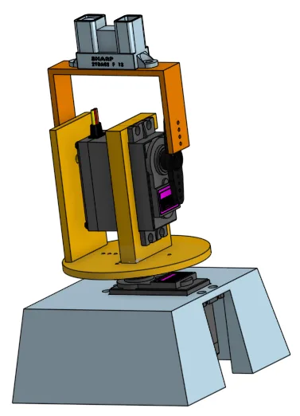
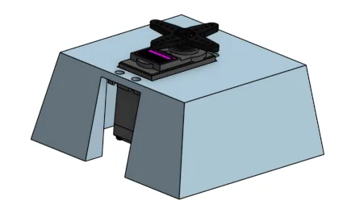
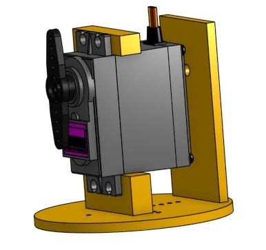
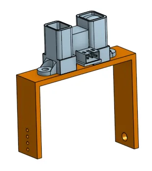
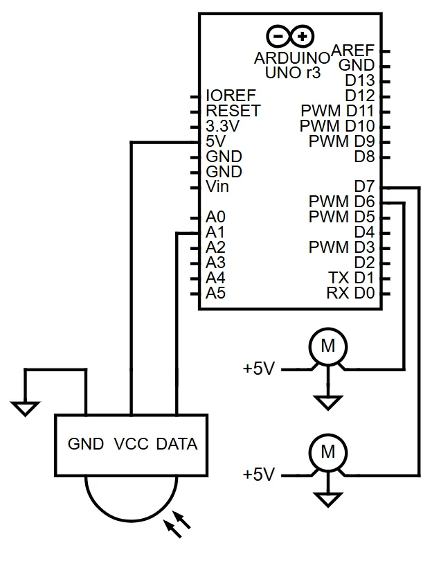
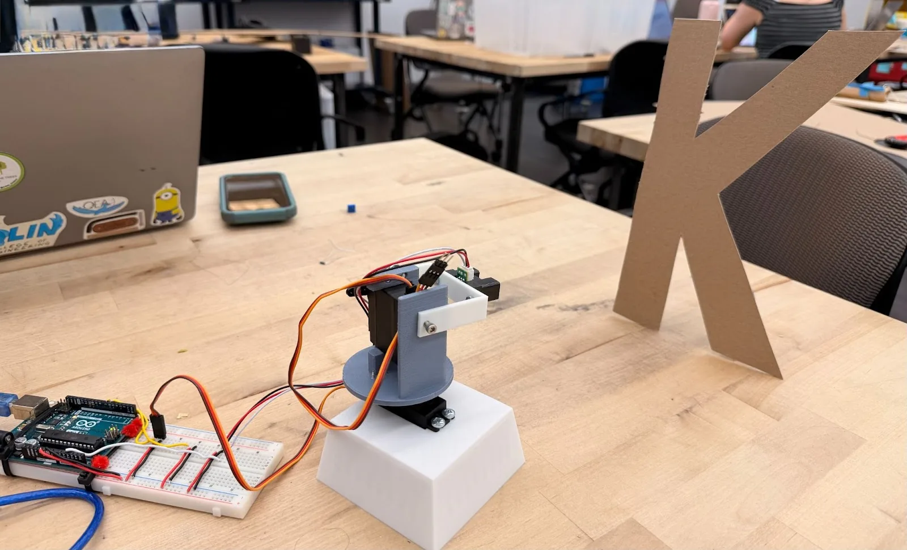
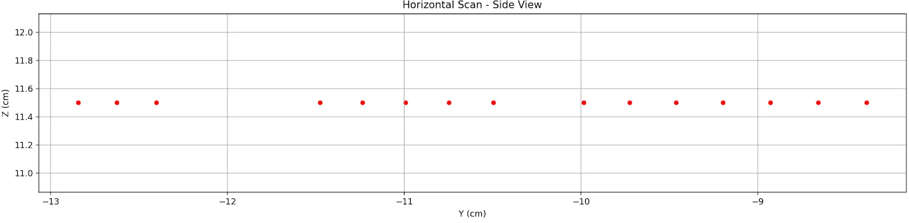
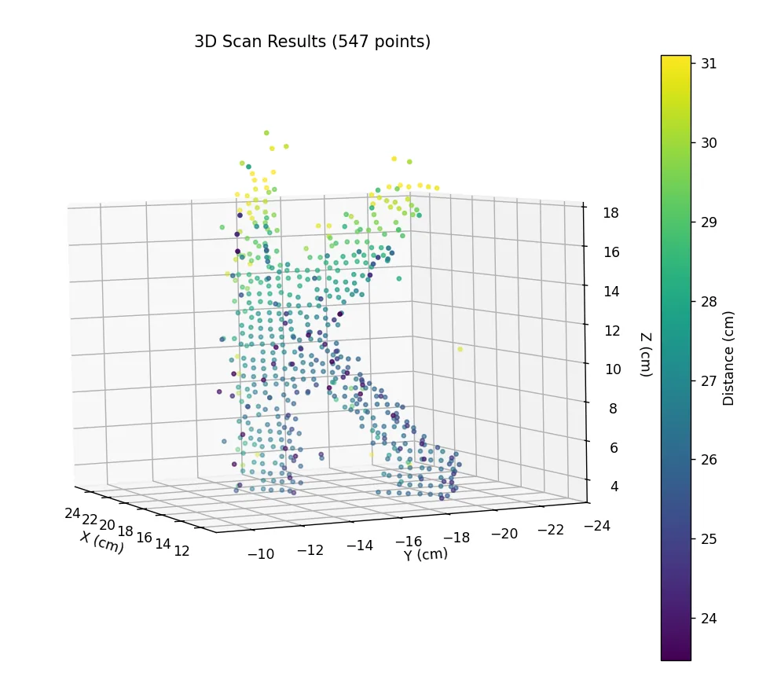

For PIE Mini Project 2 we built a 3D scanner from an Arduino, two servos and a Sharp GP2Y0A02YK0F infrared distance sensor. The Arduino streams the readings over serial and a Python script converts them to Cartesian points and plots the point cloud; a scan of a cardboard letter K came out at 547 points after filtering.
Overview
The servos sweep the sensor across the scene in pan and tilt, so each reading is a distance at a known pair of angles. Converting those spherical readings to Cartesian coordinates gives a point cloud of whatever is in front of the scanner. The two hard parts were the sensor, which is noisy and follows an inverse power law rather than a straight line, and the trade-off between angular resolution and scan time.
Design
The printed parts are a base block that holds the pan servo, a round platform on the pan servo that carries the tilt servo, and a U-shaped bracket on the tilt servo that holds the sensor. The bracket geometry was chosen so it clears the base through the full tilt range.




Electronics and control
- Arduino Uno for servo control and sensor readout.
- Two servos, one for pan and one for tilt.
- Sharp GP2Y0A02YK0F infrared distance sensor, 20–150 cm range.
- 3D-printed base, rotating platform and sensor bracket.

Software
Arduino
The Arduino steps the pan servo from 0 to 180° and the tilt servo from 0 to 90° in 5° increments, waits 100 ms at each position, reads the sensor on an analog pin and prints pan, tilt and the raw ADC value over serial.
// Arduino scanning control
#include <Servo.h>
Servo panServo, tiltServo;
void loop() {
for (int pan = 0; pan <= 180; pan += 5) {
panServo.write(pan);
for (int tilt = 0; tilt <= 90; tilt += 5) {
tiltServo.write(tilt);
delay(100);
int distance = analogRead(A0);
Serial.print(pan); Serial.print(",");
Serial.print(tilt); Serial.print(",");
Serial.println(distance);
}
}
}Python
The Python script reads the serial data, converts each ADC value to a distance with the calibration curve below, converts spherical to Cartesian coordinates and plots the points with matplotlib.
# Python data processing and visualization
import numpy as np
import matplotlib.pyplot as plt
def spherical_to_cartesian(r, theta, phi):
x = r * np.sin(np.radians(phi)) * np.cos(np.radians(theta))
y = r * np.sin(np.radians(phi)) * np.sin(np.radians(theta))
z = r * np.cos(np.radians(phi))
return x, y, z
# Process scan data
points = []
for pan, tilt, sensor in scan_data:
distance = 29.988 * pow((sensor * 5.0/1023.0), -1.173)
x, y, z = spherical_to_cartesian(distance, pan, tilt)
points.append([x, y, z])
# 3D visualization
fig = plt.figure()
ax = fig.add_subplot(111, projection='3d')
ax.scatter(points[:,0], points[:,1], points[:,2])
plt.show()IR sensor calibration
The Sharp GP2Y0A02YK0F outputs an analog voltage that falls with distance, following an inverse power law rather than a straight line. I measured the voltage at known distances and fitted a power-law curve:
Calibration: distance (cm) = 29.988 × V-1.173
where V is the sensor voltage (0–5 V). The Arduino's 10-bit ADC gives a value from 0 to 1023, so
V = (ADC_value × 5.0) / 1023. The sensor's usable range is 20–150 cm; it is most accurate
between 30 and 100 cm.
Spherical to Cartesian
Each reading is a point in spherical coordinates (r, θ, φ); the plot needs Cartesian (x, y, z):
- r: distance from the sensor.
- θ: azimuth, the pan angle (0–180°).
- φ: polar angle, the tilt (0–90°), measured from the vertical z-axis.
x = r × sin(φ) × cos(θ)
y = r × sin(φ) × sin(θ)
z = r × cos(φ)
Filtering
The IR readings are noisy: ambient light, surface reflectivity and electrical noise all show up in the data. Filters used:
- Moving average: each reading is averaged with its neighbours (3-point window) to smooth short-term jitter while keeping edges.
- Range check: readings outside the sensor's 20–150 cm range are discarded.
- Median of repeated samples: several samples are taken at each position and the median is kept, which rejects single bad readings.
- Surface normal check: points whose local geometry does not agree with their neighbours (usually reflections) are removed.
Angular resolution
Scan resolution is set by the servo step size. I used 5° steps as a compromise between point density and scan time: 37 pan positions by 19 tilt positions is 703 points per scan, at 100 ms per position about 70 s. A finer step (2°, say) gives a denser cloud but the scan time grows in proportion. 5° is enough detail for objects 20–50 cm across.
Results



The scanner produced usable point clouds of several objects within the sensor's 20–150 cm range, with the readings streaming to the plot as the scan ran. The letter K above came out at 547 points after filtering.
What I learned
The sensor was the core of the project. Its output follows an inverse power law rather than a straight line, so the calibration curve fitted from measurements at known distances is what makes the distances real, and the filtering (moving average, range check, median of repeated samples and the surface normal check) handles the noise from ambient light and surface reflectivity. On the tooling side I got comfortable with Arduino programming and serial communication, Python and matplotlib, CAD for the printed parts, servo control and timing, and spherical-to-Cartesian coordinate transforms.